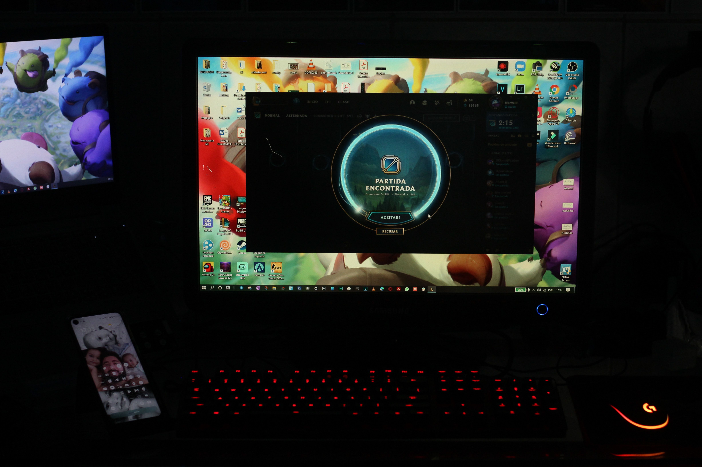

 소환사들의 티어 변동에 영향을 주는 게임으로, 2018 시즌까지는 브론즈/실버/골드/플래티넘/다이아몬드/마스터/챌린저의 티어가 있었고 브론즈부터 다이아몬드 티어까지는 각각의 티어를 세분화한 단계가 1단계(가장 상위)부터 5단계(가장 하위)까지 있었다. 2019 시즌부터는 아이언/브론즈/실버/골드/플래티넘/다이아몬드/마스터/그랜드마스터/챌린저로 구분되며, 아이언부터 다이아몬드 티어까지의 단계 구분이 4단계로 줄어들었다. 랭크 게임 플레이 조건은 기존의 만렙이었던 30레벨 이상이고, 자신이 직접 소유한 챔피언 20개 이상이다
리그 오브 레전드에선 1년이 1시즌이다. 이는 다른 게임들과 비교하면 긴 기간이다.배치를 받은 후 시즌이 끝날 때까지 랭크를 올리는 것이 랭크 게임의 주 플레이 목적으로, 시즌 종료 후 프리시즌까지 종료되면 다시 배치 게임을 치러야 한다.물론 저번 시즌에 받은 최종 랭크를 반영하여 배치 게임 점수가 계산되기 때문에 높은 랭크를 달성했다면 다음 시즌을 좀 더 유리하게 플레이 할 수 있다.
배치 게임은 2018 시즌까지는 모든 배치 게임을 치른 후 최종 랭크가 나오는 방식이지만 2019 시즌부터는 '임시 랭크'라는 게 생겼다. 임시 랭크란 첫 번째 배치 게임을 치르면 받는 랭크로, 저번 시즌의 최종 랭크를 반영해 계산된다. 임시 랭크를 받고 이후 랭크 게임을 돌리게 되면 배치 게임 도중에는 승리 시 약 60LP를 얻고(승리 횟수가 누적될수록 얻는 LP의 양이 30점대까지 감소한다.), 패배 시 LP를 잃지 않는다. 승급전은 치르지 않는다. 따라서 임시 랭크 이하로는 배치 게임 도중 랭크가 강등되지 않는다.